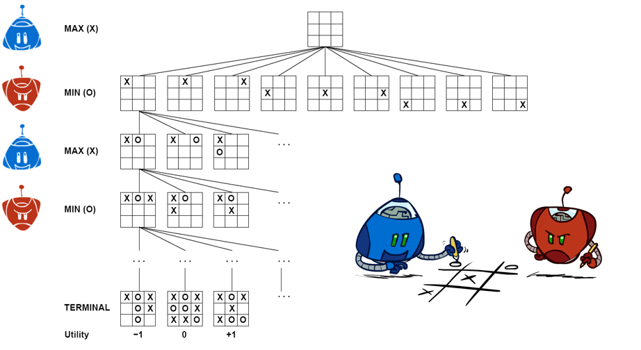
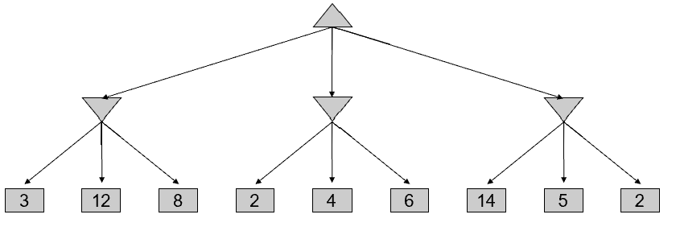
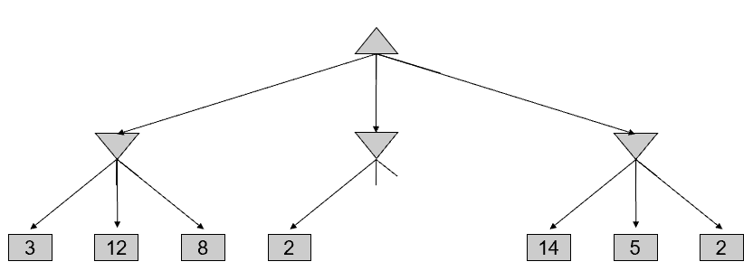
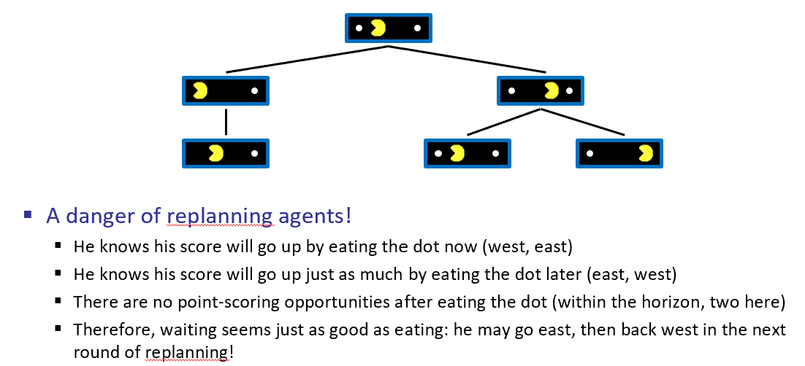

Many possible formalizations, one is:
Solution for a player is a policy: S→A
Game Tree
Deterministic, zero-sum games
Minimax search
Minimax Example
Minimax Pruning
General configuration (MIN version)
MAX version is symmetric
Try using python code
This pruning has no effect on minimax value computed for the root!
Values of intermediate nodes might be wrong
Good child ordering improves effectiveness of pruning
With “perfect ordering”:
This is a simple example of metareasoning (computing about what to compute)
Problem: In realistic games, cannot search to leaves!
Solution: Depth-limited search
Example:
Guarantee of optimal play is gone
More plies makes a BIG difference
Use iterative deepening for an anytime algorithm
Pacman with Depth-2 Lookahead
Pacman with Depth-10 Lookahead
Video of Demo Thrashing (d=2)
Why Pacman Starves
Video of Demo Thrashing -- Fixed (d=2)